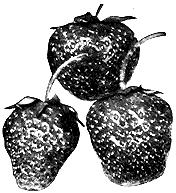
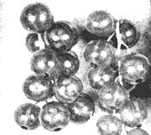
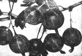
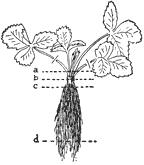
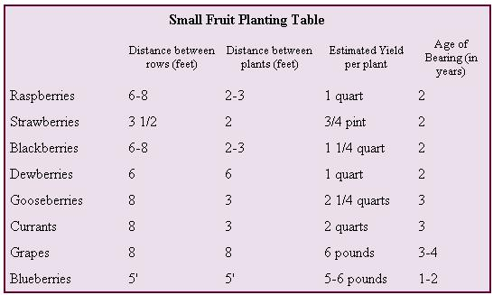
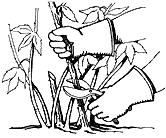
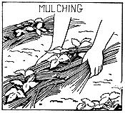
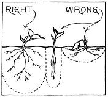

The Kind Of Berries And Grapes Money Can't Buy
March/April 1970
BERRIES and grapes are one of the best investments you can make. Here it is early December and this morning for breakfast we had some of our own delicious raspberries and cream. When some friends came to dinner a few days ago we had straw berry shortcake made with our own strawberries. Soon we hope to have currant jelly and our own grapes and lots of delicious fruit juices - perhaps some home-made wine.
Even the smallest place can provide an abundance of mouth-watering small fruits and berries with only a few hours work a year. Home-grown fruits, especially blackberries, gooseberries and currants (all of which are almost too fragile to be handled commercially) offer a family delicacies they'd never otherwise have. Few people, according to government studies, get enough of the so-called "protective" fruits rich in vitamins needed for good health. And most city people never have the chance to indulge in all the fun of growing these fruits on a place of their own.
You can plan your garden so you'll have a succession of fresh fruits ripening from June to October. And all winter you can eat berries you've canned or frozen. Strawberries, raspberries, currants, and grapes are the best known favorites. If you prefer something a little different, you can choose gooseberries, dewberries, or mulberries. (Edible mulberries are delicious fresh, canned or for vine. They grow on a bushy tree.) If space is limited, the bushes make fine hedges and shrubbery. Probably nothing you do will give you more for less cost. By all means choose the better varieties that are too tender and delicate to be found in prime condition in the store. Your local nurseryman can advise you on this and supply plants best adapted to your climate. Before you decide on your planting of grapes and berries, you should learn when each has to be sprayed, pruned and mulched and figure out a schedule for doing this. It's worthwhile to read up on this. Meanwhile, here are some things we learned about growing these fruits that may help you.
Strawberries
There's a big difference between strawberries you buy in the stores and those you pick sweet and fully ripe on your own place. Growing them is not difficult. You have a choice of planting them in hills, in matted rows or in spaced-rows. We used the spaced-row system and we think it's easier because it requires less pruning and makes weeding and picking the berries simpler. We planted 100 plants in the Spring and got 55 quarts the next year. Plants usually bear for two or three years, after which they need replacing.
Raspberries
We like raspberries so much we planted 100 bushes - cost $8.00. This planting should bear for at least 7 years. Perhaps we made a mistake when we chose the Latham for our garden because this is really a commercial berry, but it is hardy and we did get wonderful berries. We also planted some Indian Summer because this is an everbearing type which means you get berries in the early Summer and another crop in the Fall. The raspberries planted in the Spring gave berries the following year. We learned you shouldn't mulch raspberries with poultry litter in the Spring because it makes the shoots grow too fast. When this happens too many become "Winter killed." Raspberries are pruned early in the Spring, and sprayed 3 or 4 times. Any diseased canes should be removed immediately after crop is over. And that's all we've had to do to get 75 or more quarts of raspberries a year!
Currants You can't beat currants for jelly. They are hardy, easy to grow. A half-dozen bushes are well worth considering. Some states ban currants and gooseberries because certain varieties supposedly carry white pine blister rust, a disease that destroys white pine trees. Cool moist climates are ideal for currants.
Gooseberries I hope some of you people who are already living in a "Have-More" homestead will want to try gooseberries. They make good pies, tarts and jams and the fresh ripe fruit makes a delicious dessert. Even in Canada they can be grown; in cool, moist climates they flourish. (In England they grow so well that the berries are often as large as eggs!) Experts say this fruit has been pretty much neglected in this country - it ought to make an interesting experiment.
Grapes
We planted 10 vines - 4 Concord, old-standard, for jelly and jam . . . 2 Caco, a red grape ripening in early September . . . 2 Niagara, white grape which ripens in mid season . . . and 2 Portland, another white grape, which ripens early. Grapes really don't bear heavily until the fourth season, so we haven't actually had any from our vines as yet. All 10 grape vines cost only $5.00.
Blueberries
Blueberries are rather expensive - $1.00 per plant, we paid. But four to six are supposed to be enough for an average family. One interesting thing about blueberries-they often fruit the first year and will keep bearing for fifty years. Unhappily, out of our six bushes we lost four last year-the goats ate one and a bulldozer we had ripping out stumps in our back yard chewed three more.
Blackberries
This fruit makes wonderful jam and jelly. We put in about 15 bushes as a hedge. Blackberries have a reputation for being sour. This is because often times the berries you buy are picked as soon as they turn black - actually they are best when left on the bush until dead ripe. As in the case of other berries, it is important to mulch blackberries. The best time to do this seems to be directly after the berries have been picked. Blackberries don't need commercial fertilizer, but the soil should be kept moist and provided with humus. Thus the mulch.
Dewberries
This is really a blackberry. It is often called "creeping blackberry," the main difference being that it grows on a vine instead of a bramble. The dewberry is sensitive to frost and will not bear good yields unless you plant several varieties to insure cross pollination.
Home Wine-Making
Although the wines we've tried to make have been pretty terrible so far, there's no reason you can't make excellent wines at home. In fact Fortune Magazine says 30 million gallons of wine are made in American homes every year.
Our mistake was in trying to make wine on the basis of "heresay" instead of getting good, clear, authoritative information. If you'd like to make wine from grapes, the main point is to get the right grapes. This isn't difficult because every state produces wine grapes. (See Farmers' Bulletin No. 1689). Or you can make delicious "wines" from blackberries, raspberries, elderberries, currants, gooseberries, dandelions, rhubarb, almonds, apples, apricots, barley, cherries, pears, oranges, pea pods, potatoes, tomatoes, rice recipes for all of these and many more are in "Home-Made Wine Secrets".
Suggested Reading:
Homestead Way to Grow Strawberries, 35 cents.
Homestead Way to Grow Raspberries& Blackberries, 35 cents.
Home Wine & Cider Making, $1.00.
|
 Strawberries |
 Black Raspberries |
 Currants |
|
 Gooseberries |
 Strawberry plant showing trimming and depths of planting: (a) planted too deep. (b) planted correct depth. (c) not deep enough. (d) pruning of roots. |
 PRUNING - THE SECRET OF SUCCESS: Pruning can become a complicated subject. The main point is that all grapes are borne on branches (called canes) developed from previous year's growth. A little study of grape care and pruning pays high dividends. |
|
(Above) After a raspberry cane has borne fruit it should be cut near the ground. Pruning is simple if you learn what to prune and when. |
 (Below) If strawberries are mulched as shown less cultivating is needed and you obtain better fruit, |
 |
|
 |
|
|